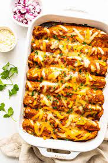

Enchiladas

Description
These Tex-Mex style chicken enchiladas are easy to make
with a basic filling of sautéed chicken, green chiles,
onions, beans and shredded cheese
Ingredients
Sauce
- 2 tablespoons canola oil
- 2 tablespoons all-purpose flour
- 1 28-ounce can enchilada red sauce
- 2 cups chicken broth
- 1/2 teaspoon salt
- 1/2 teaspoon black pepper
Meat
- 1 pound ground beef
- 1 onion, chopped
- 1/2 teaspoon salt
The Rest
- canola oil, for frying
- 10 to 14 corn tortillas
- 2 4-ounce cans diced green chilies
- 1 cup chopped green onions
- 1/2 cup chopped black olives
- 3 cups grated sharp Cheddar cheese
- cilantro for garnish